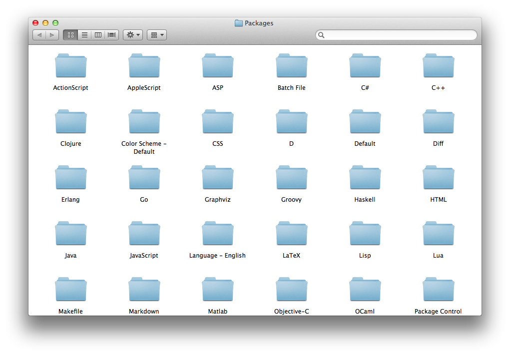

目录结构
Data 目录
可携式版本（portable）的 Sublime Text 2 所有跟使用者有关的资料，都放在 Data 目录下（Sublime Text 2/Data）；安装版本则因为系统平台的不同，预设路径是放在以下这些地方：
- Windows：%APPDATA%\Sublime Text 2
- OS X：~/Library/Application Support/Sublime Text 2
- Linux：~/.config/sublime-text-2
所有 Sublime Text 2 相关配置的档案，都放在这些目录下。
Packages 目录

Packages 目录就放在 Data 目录下。
Packages 目录非常重要，所有程式语言、标记语言的语法上色档案，以及各种客制化的外挂资源，全部都是放在这个目录底下。Sublime Text 2 的 package 意义上就像 Firefox 的 add-on、Google Chrome 的 extension，加强原本没有的功能，可由开发者透过 Sublime Text 2 的 API 用 Python 自行开发，请见 Python 控制台与 Python API。
你可以直接从 Sublime Text 2 的选单：Preferences >> Browse Packages 开启系统中 Packages 这个目录的位置，也可以用指令面板（Command Palette）呼叫，虽然你目前可能还不知道这是什么，不过很快就会介绍到。
当你浏览这个目录的时候会看到很多程式语言的名字，里面通常放的都是支援这些语言的语法上色规则，或是巨集、自动完成的程式码片段等等，可是其中有两个看起来很不一样，那就是 Default、User 这两个目录。
Default package
Packages/Default 是存放所有 Sublime Text 2 预设的程式、巨集、偏好设定的档案等等，这里的档案理论上都不应该去动它。
User package
通常有些未封装的 package，或是自制的语法、巨集或外挂，那么 Packages/User 是放置这些档案的最佳地点。
当 Sublime Text 2 进行软体更新时，不会去更改 User 这个文件夾的档案，因此你的偏好设定、快捷键设定等等，都应该要放在这个地方，而不是去修改 Default 目录下的档案，这个部分会在客制化进一步说明。
Python 控制台与 Python API
这章节的资讯对有兴趣开发 Sublime Text 2 外挂的开发者比较有用，对于一般的编辑器使用者只需要知道，Sublime Text 能够让人用 Python 自行开发想要的功能。
在 Windows 和 Linux 上，Sublime Text 2 有内建的 Python 直译器，让开发者撰写外挂时，能够快速地检视设定，以及测试 API calls。这个内建的 Python 直译器只用来与外挂 API 互动，而不是用来做一般的程式开发；而在 OS X 上 Sublime Text 2 则是用系统内建的 Python，这意思就是说如果你更改了系统上的 Python 版本，很有可能会造成 Sublime Text 2 出现问题。
Python 控制台是内嵌在 Sublime Text 2 的一个小视窗，能够输入 Python 程式码然后执行它，而 Sublime Text 或是它的外挂也会从这里输出讯息，如果发现某个功能或是某个外挂没作用了，可以打开这个控制台找到错误讯息。
要打开 Sublime Text 2 的 Python 控制台可以用快捷键按下 Ctrl + `，或是从选单中选择 View >> Show Console。
TextMate 相容
Sublime Text 2 几乎能够完整地相容 Textmate 的 bundles 和配色主题，这个资讯对想从 TextMate 转用 Sublime Text 的使用者非常有用。
TextMate 是 OS X 上非常知名的编辑器，想当初曾有很多人为了它而买了 Mac，可见这魅力有多大！可是 TextMate 自己不争气，让许多曾经爱过它的人失望（那不包括我！XD）。
TextMate 已经有发展相当成熟的社群替它撰写不少好用的 bundles（bundles 意义上等同于 Sublime Text 2 的 packages），只要把 TextMate bundle 放在 Packages 目录下就可以用，但是 Sublime Text 2 对 bundle 的 command 并不支援。
Vi 模拟模式
Vi 是「古时候」相当经典的编辑器，他让开发者能够只用键盘便完成所有的操作；而 Vim 是改良后的版本，目前仍然被广泛地使用。
Sublime Text 透过 Vintage 这个内建的 package，提供了 vi 模拟模式，让你可以使用 vi 的指令模式来操作 Sublime Text。（相容 TextMate 又可以模拟 Vi，Sublime Text 真是强大的太邪恶了！XD）
这个 Vintage package 预设是被忽略的，要启用这个模式，选择 Preferences >> Settings - User 或是用快捷键 Command + , 偏好设定的档案，将原本的内容：
"ignored_packages": ["Vintage"]
改成：
"ignored_packages": []
一旦这个模式被启用，你应该可以看到「INSERT MODE」文字出现在左下角的状态栏里。
Vintage 一开始预设是 insert mode，这样的好处是让不熟悉模式概念的初学者，一开始不会因为敲不出字来而感到太大的挫折。可以在偏好设定里加上这行，取消这个预设值：
"vintage_start_in_command_mode": true
Vintage 这个 package 包含常用的 Vi 指令，例如：d（删除）、y（复制）、c（修改）、gu（小写）、gU（大写）、g~（交换大小写）、g?（rot13）等等，也包括许多移动插字符号的方式，例如：h、j、k、l 和 W、w、e、E、G、gg等等，几乎该有的都有了。
不一样的是，当切换到 insert mode 时，就是一般的 Sublime Text 2 的编辑型态，这时的快捷键就如同平时的 Sublime Text 2 一样，Vi insert mode 的快捷键在这里并不适用。
此外，如果要用 Ex mode 需要另外安装 VintageEx 这个 package。
如果你在 OS X Lion 平台上使用 Sublime Text 2 的 Vintage，会发现长压按键不会重复动作，而是跳出一个气泡框提示你选择各种变异字。这在 command mode 非常不方便，这是因为系统设定的缘故，如果想要修正这个问题，可以在终端机里输入这行指令：
defaults write com.sublimetext.2 ApplePressAndHoldEnabled -bool false
最后，Vintage 提供以下这些 ctrl 按键的快捷键：
- ctrl + [：Escape
- ctrl + R：复原上一步
- ctrl + Y：往下卷动一行
- ctrl + E：往上卷动一行
- ctrl + F：往下卷动一个页面
- ctrl + B：往上卷动一个页面
然而在 Windows 和 Linux 上，这些按键会与 Sublime Text 2 原本的一些快捷键冲突，所以这些快捷键预设是关闭的，你可以在偏好设定里加上以下这行来启用：
"vintage_ctrl_keys": true